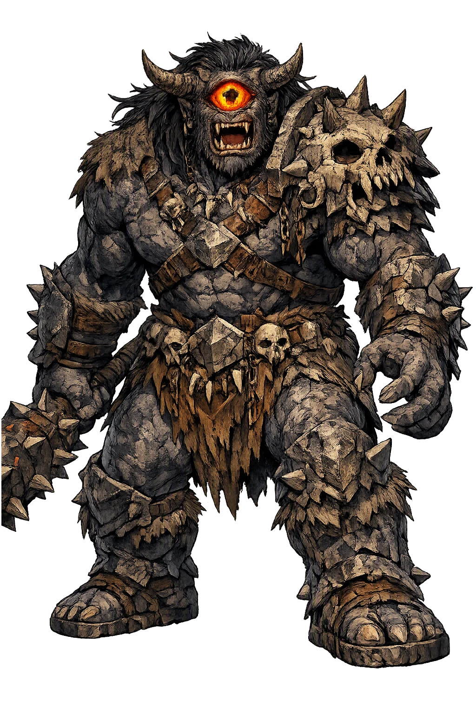
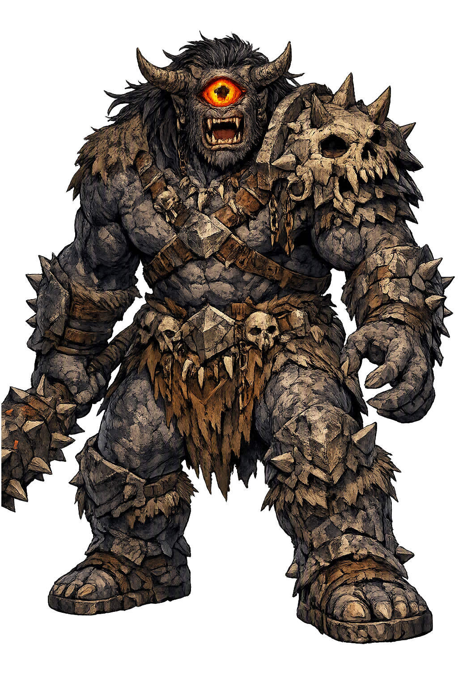

The Authentic Orthography
Destruction, Evil Eye, Fomorians · Fomorian king whose destructive eye blasts armies when its lid is raised, slain by his grandson Lúg with a sling-stone at Cath Maige Tuired.

Unicode restoration and ASCII comparison
Balor
The name survives in scholarly transliteration. Balor is the standard Celtic romanisation, documented in academic sources — “Fomorian king whose destructive eye blasts armies when its lid is raised, slain by his grandson Lúg with a sling-stone at Cath Maige Tuired.”. Because the spelling uses only Latin letters, the form is the same in both ASCII and Unicode.
No indigenous writing system is securely attested for individual celtic names. The form shown is a modern scholarly transliteration.
balor
The plain balor form is identical to the Unicode restoration. Because this name is already written in Latin letters, no diacritics, stress, or script information were lost — only capitalization differs.
Balor
The Unicode restoration does not need to recover lost marks for Balor. Its value is canonical spelling and consistent cataloguing, not the reconstruction of erased orthography. The domain is readable as-is to both DNS and humanity.
Balor.com → balor.com
The non-ASCII characters in Balor are encoded while the ASCII remains visible. To the DNS, it is Punycode. To humanity, it is Balor.
How Balor is preserved in writing
No indigenous writing system is securely attested for individual celtic names. The form shown is a modern scholarly transliteration.
Contribute scholarly provenance →Owned, ideal, and ASCII forms of Balor
Balor
The full Unicode restoration. balor.com is not in the PuniCodex collection — it is watched for release; if it drops, this temple upgrades to an owned flagship.
How Balor was spoken
The Venomed Gaze, the Fomorian Tribute, the Fortress of Tory, the Grandson's Stone
Balor — Balor Béimnech, 'Balor of the Mighty Blows' — is king of the Fomorians, the sea-borne oppressors of medieval Irish tradition, and owner of the most feared weapon in the whole corpus: a single eye so venomed by the fumes of a druids' brew that no army could stand before its gaze. Grandfather of Lugh and doomed by that very grandson's sling-stone at Mag Tuired, he is the Irish tradition's great figure of destructive sovereignty — power that poisons its possessor and is answered, in the end, by his own blood.
One eye, poisoned in boyhood by the fumes of a druids' charm-brew; any army it looked upon was worthless, though it were many thousands strong.
Under Balor and Indech the Fomorians taxed Ireland from the sea, and set the very gods to serf-work until Mag Tuired broke the yoke.
In the Donegal oral tradition, the sea-girt tower where Balor prisoned his daughter Eithne against the prophecy of a grandson's hand.
Lugh's sling-stone at Mag Tuired drove the eye backward through Balor's head, so that its own gaze blasted the Fomorian host.
Stories of Balor
Balor's dossier is short and total: he exists in the tradition to be the thing that must be brought down. Cath Maige Tuired gives him the war's most famous single stroke, the Lebor Gabála fixes his lineage and his wife's revenge, and the Donegal oral tradition supplies the prophecy, the tower, and the stolen cow that medieval manuscripts only glance at.
The book of invasions fixes Balor's place before it tells his deeds: Balor mac Doit meic Néit, 'Balor son of Dot, grandson of Nét', king of the Fomorians — the sea-going race who had pressed on Ireland since the age of the Nemedians, exacting tribute from the outer islands. His wife was Cethlenn of the crooked teeth, and it was her spear, or the wound she dealt at Mag Tuired, that killed the Dagda at the Brug years later — the Lebor Gabála records the All-Father's death from Cethlenn's blow as the long-settled price of Balor's war.
His daughter was Ethniu, and she was given to Cian, son of Dian Cécht the healer; their son was Lugh, the Samildánach, equally skilled in all arts. Thus the Fomorian king was the grandfather of the Túatha Dé Danann's deliverer — the genealogy that the whole tragedy of Mag Tuired turns on.
Cath Maige Tuired explains the weapon before it uses it. Balor had a destructive eye, never opened except on a battlefield, and four men were needed to raise its lid with a polished handle that passed through it. Any army that eye looked upon was made worthless, though it were many thousands strong.
The poison had a childhood. When Balor was a boy, his father's druids were brewing a charm, and the boy looked in on the work; the fumes of the brew rose and struck the eye, and from that day its gaze was venom. The detail is the tradition's whole theory of the figure in one image: power taken in unguarded, as a child takes in smoke, and carried incurably for a lifetime.
The medieval manuscripts know that Ethniu was Balor's daughter and Lugh's mother; how that came to be is told by the oral tradition of the north-west, collected in the nineteenth century on and around Tory Island — Balor's sea-girt fortress off the Donegal coast. A druid foretold that Balor would die by the hand of his own grandson, and the king answered the prophecy with masonry: he locked his daughter Eithne in a tower on the rock, with twelve matrons to keep every man from her sight.
The doom came in by the usual door. Balor coveted the Glas Gaibhnenn, the grey-green cow of Cian, and stole her across the water; Cian crossed to Tory for redress, and with the help of the druidess Biróg won into the tower in woman's dress and to Eithne's side. When the child was born Balor had him cast into the sea — but the sea gave him back, fostered and hidden, until a young stranger called Lugh came to Nuadu's court at Tara and was asked what art he practiced. The question the Fomorians could not answer had been growing up under their own doom all along.
At the second battle of Mag Tuired the armies broke each other all day, and then Balor came against the Túatha Dé Danann with the Fomorian host, destroying and slaughtering. He commanded that the lid of his eye be raised, so that he might blast the enemy with its look — and the four men set the polished handle to the lid.
It was then that Lugh cast a sling-stone at him, which carried the eye backward through his head, so that it was his own host that looked into it. Balor fell on top of the Fomorian fighting-men, and twenty-seven of them died beneath his side. The weapon the Fomorians had built their tyranny on spent its last gaze on its owners — and the battle turned with the eye. Afterward the Túatha Dé Danann took the tribute back from the defeated host, and the power of the Fomorians over Ireland was broken for good.
Every part of Balor's story is about containment failing. The eye is contained — cloaked, lidded, lifted only by machinery — and containment is the whole catastrophe: a gaze so dangerous it must be operated by four other men is no longer a weapon but an occupation, a king reduced to the caretaker of his own poison. The daughter is contained in a tower against a prophecy, and the tower is the prophecy's instrument: no tower, no Cian, no Lugh. Balor is the tradition's purest study of power that can only destroy — he is given no craft, no counsel, no feast, no children worth the having, nothing but the eye and the tax it enforces.
Enter Extended Lore